9 Correlated Traits and the Response of Multiple Traits to Selection
“There are many laws regulating variation, some few of which can be dimly seen […] I will here only allude to what may be called correlation of growth. […] Some instances of correlation are quite whimsical; thus cats with blue eyes are invariably deaf […] pigeons with short beaks have small feet, and those with long beaks large feet. Hence, if man goes on selecting, and thus augmenting, any peculiarity, he will almost certainly unconsciously modify other parts of the structure, owing to the mysterious laws of the correlation of growth.” -Darwin, 1859.
Foot bone connected to the heel bone,
Heel bone connected to the ankle bone” –Dem Bones, Johnson brothers.
Organisms are highly complex systems. Any one trait of an organism will be connected to countless others through complex developmental, behavioural, or physiological pathways. Thus the genetic variation underlying variation in one trait will influence many other traits, leading to genetic correlations among traits. The fitness of an organism depends on the outcome of many different organismal processes and phenotypes. Thus natural selection is often acting on many phenotypes in concert. In some cases the various directions that selection tries to pull the population phenotypes may not all be possible to satisfy all at once. Such fitness tradeoffs occur when selection acts on genetic correlated phenotypes in contradictory ways. We’ll first look at how the correlation of different traits across relatives can be used to estimate the genetic covariance between traits, then how these covariances can be used to understand the response to selection of multiple traits.
9.1 Convariance among traits
Traits often covary with each other, both due to environmentally induced effects (e.g. due to the effects of diet on multiple traits) and due to the expression of underlying genetic covariance between traits. Genetic covariance, in turn, can reflect pleiotropy, a mechanistic effect of an allele on multiple traits (e.g. variants that affect skin pigmentation often affect hair color), the genetic linkage of loci independently affecting multiple traits, or the effects of assortative mating.
Consider two traits \(X_{1,i}\) and \(X_{2,i}\) in an individual \(i\). These traits could be, say, the individual’s leg length and nose length. As before, we can write these as
\[\begin{aligned} X_{1,i} &= \mu_1+ X_{1,A,i} + X_{1,E,i} \\ X_{2,i} &= \mu_2 +X_{2,A,i} + X_{2,E,i} \\ \end{aligned}\]
As before we can talk about the total phenotypic variance (\(V_1,V_2\)), environmental variance (\(V_{1,E}\) and \(V_{2,E}\)), and the additive genetic variance for trait one and two (\(V_{A,1}\), \(V_{A,2}\)). But now we also have to consider the total covariance between trait one and trait two, \(V_{1,2}=Cov(X_{1},X_{2})\), as well as the environmentally induced covariance (\(V_{E,1,2}=Cov(X_{1,E} ,X_{2,E} )\)) and the additive genetic covariance (\(V_{A,1,2} =Cov(X_{1,A} ,X_{2,A} )\)). To better understand the covariance arising due to pleiotropy, let’s think about a set of \(L\) SNPs contributing to our two traits. If the additive effect of an allele at the \(i^{th}\) SNP is \(\alpha_{i,1}\) and \(\alpha_{i,2}\) on traits 1 and 2, then the additive covariance between our traits is
assuming our loci are not in linkage disequilibrium. Thus a genetic correlation arises due to pleiotropy, because loci that tend to affect trait 1 also systematically affect trait 2. For example, alleles associated with later age at menarche (AAM), age at first menstrual cycle, in European women also tend to be positively associated with height (see Figure 9.1), thereby creating a genetic correlation between AAM and height.
We can ‘store’ our variance and covariance values in matrices, a way of gathering these terms that will be useful when we discuss selection:
\[\bf{V_P}= \left( \begin{array}{cc} V_{1} & V_{1,2} \\ V_{1,2} & V_{2} \\ \end{array} \right) \tag{9.2}\]
and
\[\bf{G}= \left( \begin{array}{cc} V_{A,1} & V_{A,1,2} \\ V_{A,1,2} & V_{A,2} \\ \end{array} \right) \tag{9.3}\]
Here we’ve shown the matrices for two traits, but we can generalize this to an arbitrary number of traits.
We can estimate these quantities, in a similar way as before, by studying the covariance in different traits between relatives:
\[Cov(X_{1,i},X_{2,j}) = 2 F_{i,j} V_{A,1,2} \tag{9.4}\]
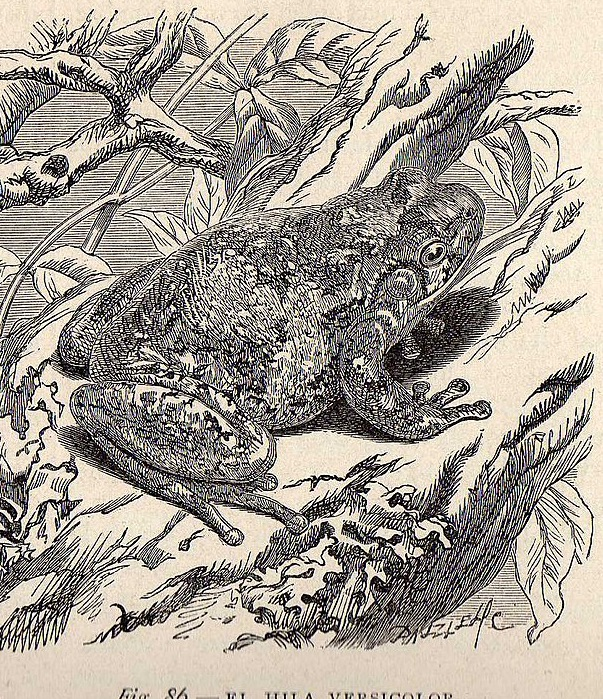

An example of phenotypic and genetic covariance are shown on the left and right of Figure 9.3 respectively. Gray treefrogs (Hyla versicolor) chorus to attract mates. Their call is made up of a trill, a note rapidly pulsed a number of times, that is then repeated after some period. Female frogs prefer males who make a lot of calls and where each of those calls have a large number of pulses. However, doing both is be very energetic, and so there is potentially a tradeoff between these two aspects of a male frog’s call. Indeed Welch et al. (2014) found in lab-reared male frogs that the pulse number and the time period between calls were positively correlated, left side of Figure 9.3, i.e. individuals were investing their energy in making either few highly pulsed calls or many calls with few pulses. This phenotypic covariance reflects an underlying genetic covariance between theses two frog call characteristics (right side Figure 9.3). Fathers whose sons have calls with highly pulsed calls also have sons whose calls are more spaced apart.
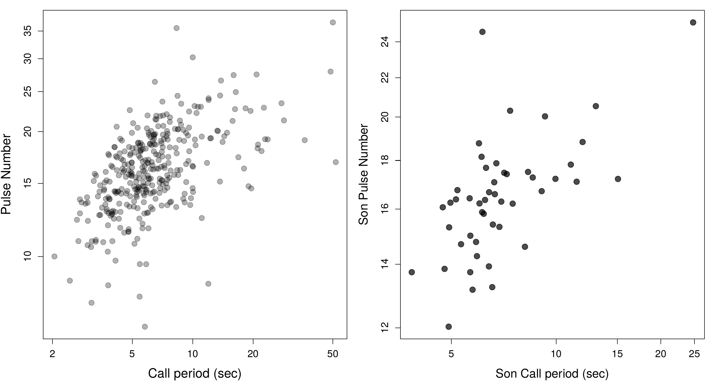
One useful summary of a genetic covariance is the genetic correlation between two phenotypes
where \(V_{A,1}\) and \(V_{A,2}\) are the additive genetic variance for trait 1 and 2 respectively. Here, \(r_g\) tells us to what extent the additive genetic variance in two traits is correlated.
Another important application of genetic covariances is in the study of sexually antagonistic selection and the evolution of sexual dimorphism; here we’ll calculate the genetic covariance between male and female phenotypes. For example, below is the relationship between the forehead patch size for pied fly-catcher fathers and their sons and daughters. The phenotype has been standardized to have mean \(0\) and variance \(1\) in each group. The phenotypic covariance of the sample of fathers and sons is \(0.35\), while the phenotypic covariance of fathers and daughter is \(0.23\).
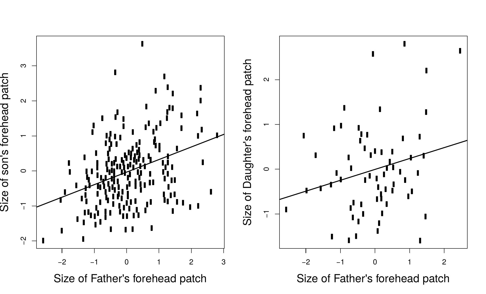
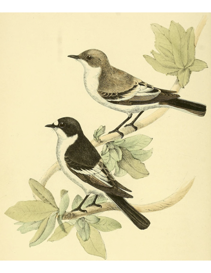
9.2 Selection on multiple traits
To understand the short-term consequence of selection on multiple phenotypes we can generalize the Breeder’s equation to multiple traits(Lande 1979). Considering two traits we can write our responses in both traits as
\[\begin{aligned} R_1 & = V_{A,1} \beta_1 + V_{A,1,2} \beta_2 \\ R_2 & = V_{A,2} \beta_2 + V_{A,1,2} \beta_1 \end{aligned} \tag{9.6}\]
where the \(1\) and \(2\) index our two different traits. Here \(V_{A,1}\) and \(V_{A,2}\) are the additive genetic variance for trait \(1\) and \(2\) respectively, while \(V_{A,1,2}\) is our additive covariance between our traits. Our selection gradient for trait 1, \(\beta_1\), represents the change in fitness as you change trait 1 alone holding other traits constant constant. These \(\beta\) can be estimated by multivariate regression, see below. The multivariate breeders equation is a statement that our response in any one phenotype is modified by selection on other traits that genetically covary with that trait.
We can also write this equivalently in matrix form, for an arbitrary number of traits. Writing our change in the mean of our multiple phenotypes within a generation as the vector \(\bf{S}\) and our response across multiple generations as the vector \(\bf{R}\). These two quantities are related by
\[\bf{R} = \bf{G} \bf{V_P}^{-1} \bf{S} = \bf{G} \boldsymbol{ \beta} \tag{9.7}\]
where \(\bf{V_P}\) and \(\bf{G}\) are our matrices of the variance-covariance of phenotypes and additive genetic values (Equation 9.3 (9.2)) and \(\boldsymbol{\beta}\) is a vector of selection gradients (i.e. the change within a generation as a fraction of the total phenotypic variance). Note that \(\boldsymbol{\beta} = \bf{V_P}^{-1} \bf{S}\), such that each \(\beta\) represents the selection gradient on a trait accounting for its phenotypic covariances with other traits.
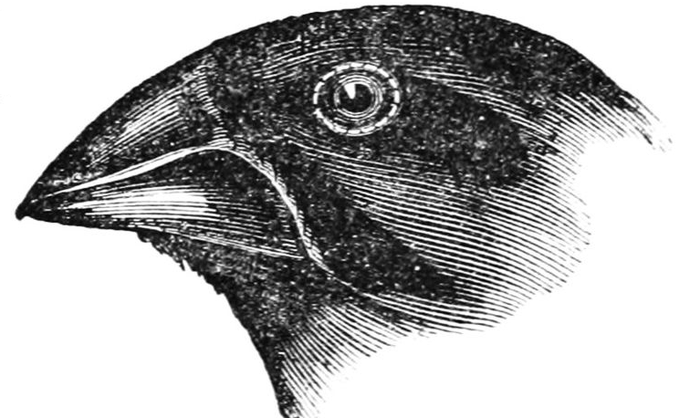
An example of the outcome of selection on multiple phenotypes consider the bout of selection measured by Grant and Grant (1995) in medium ground Darwin’s finch (Geospiza fortis). They measured 634 birds in ’76, of which only \(15\%\) survived to 1977. The birds who survived were heavier and had longer, deeper bills than average.
| Trait | Mean before Selection (1976) | S | \(\beta\) | Mean next gen. (1978) |
|---|---|---|---|---|
| Weight | 16.06 | 0.74 | 0.477 | 17.13 |
| Bill Length | 10.63 | 0.54 | -0.144 | 10.95 |
| Bill Depth | 9.21 | 0.36 | 0.528 | 9.70 |
Accounting for the phenotypic covariances among the traits (\(\bf{V_P}^{-1}\)), they found that both weight and bill depth showed direct directional selection towards larger values (positive \(\beta\)s). However, bill length showed weak selection towards shorter beaks (negative \(\beta\)), reflecting the fact that bill length shows positive phenotypic correlation with bill depth and weight, and most of the direct selection was on weight and bill depth dragging bill length along. Looking at the next generation all three traits have all significantly increased due to the strong positive genetic correlations amongst the traits (Table 9.1). Thus despite selection posssibly favouring shorter bill lengths, and certainly not favouring long bills, bill length increased in the next generation due to its positive genetic covariance with two traits that selection was acting to increase.
| Wt | BL | BD | |
|---|---|---|---|
| Wt | 0.85 | ||
| BL | +0.95 | 0.67 | |
| BD | +0.87 | +0.9 | 0.81 |
As an example of correlated responses to selection, consider the Wilkinson (1993) selection experiment on Stalk-eyed flies (Cyrtodiopsis dalmanni). stalk-eyed flies have evolved amazingly long eye-stalks. In the lab, Wilkinson (1993) established six populations of wild-caught flies and selected up and down on males eye-stalk to body size ratio for 10 generations (left plot in Figure 9.7). Despite the fact that he did not select on females, he saw a correlated response in the females from each of the lines (right plot), because of the genetic correlation between male and female body proportions.
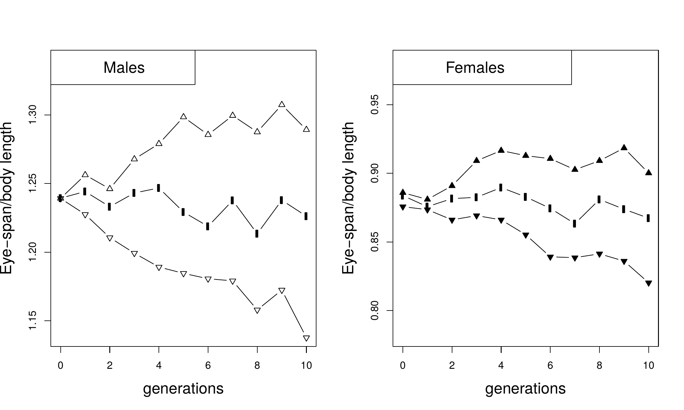
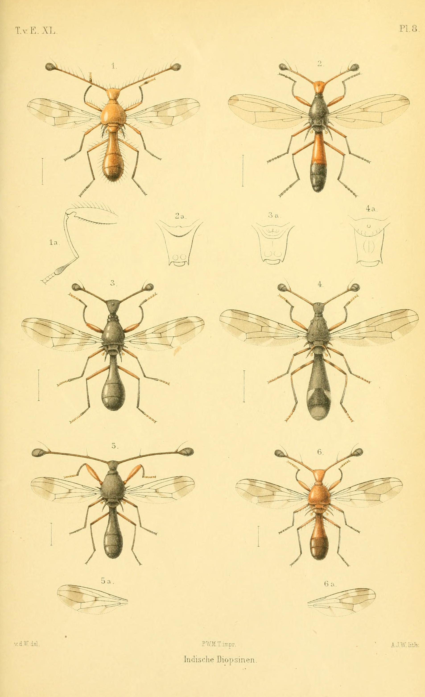
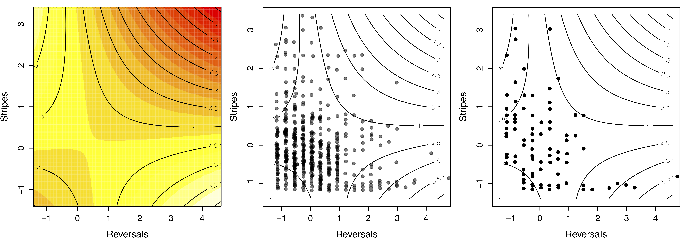
Estimating multivariate selection gradients. We can estimate multivariate directional (\(\beta\)) and quadratic selection gradients (\(\gamma\)) just as we did for a single traits (\(x_1\) and \(x_2\)), using linear and quadratic models (in Equation 8.14 and (8.19)). For example, for two traits we can write
\[w_i \sim \beta_1 x_{1,i} + {}^{1}\!/\!{}_{2} \gamma_1 x_{1,i}^2 + \beta_2 x_{2,i} + {}^{1}\!/\!{}_{2} \gamma_2 x_{2,i}^2 + \gamma_{1,2} x_{1,i} x_{2,i} + \overline{w} \tag{9.8}\]
where \(\beta_1\) and \(\gamma_1\) are the directional and quadratic selection gradients for trait one, and similarly for trait two (Lande and Arnold 1983). The covariance selection gradient between traits is given by \(\gamma_{1,2}\). This technique for measuring multivariate selection is sometimes called ‘Lande-Arnold regression’.
Brodie (1992)’s work provides a nice example of selection on multiple predation-avoidance traits in northwestern garter snakes (Thamnophis ordinoides). Brodie (1992) released hundreds of snakes born in the lab into the wild, and then performed mark-recapture observations to monitor their fate. Before releasing them he measured how stripy they were, and their behavioural tendency to reversals of direction during simulated flight from a predator. His quadratic fitness surface is shown in Figure 9.9, based on fitting the regression given by Equation 9.8 to juvenile survival. He found that neither single trait directional or quadratic gradients were significant, i.e. there was no apparent selection on one trait ignoring the other. However, there was a significant negative covariance selection (\(\gamma_{1,2}<0\)). The individuals with the highest chance of survival are either highly striped and perform few reversals (top left corner), or have little striping but reverse course frequently (bottom right corner).
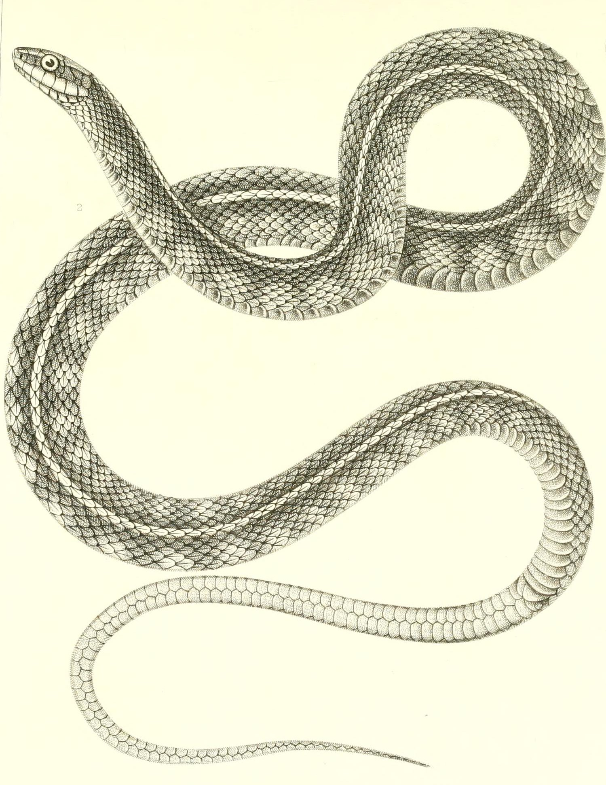
.jpg){kind=link}
Multivariate fitness landscapes. In the last chapter we saw that we can often think of our population moving across a mean fitness landscape. Selection on a single trait corresponding to our population taking steps that climb the nearest fitness peak. Similarly our multi-trait response to selection (often) can be thought of as our population climbing a mean fitness landscape (see Figure 9.11). However, the path our population takes now depends crucially on genetic correlations.
Previously we saw that our single trait selection gradient can be writen as \(\beta= {}^{1}\!/\!{}_{\overline{w}} {}^{\partial \overline{w}}\!/\!{}_{\partial \bar{x}}\) (if fitness is frequency independent, Equation 8.17). This holds for each of our traits and so we can rewrite our two-trait breeders’ equation (Equation 9.6) as
\[\begin{aligned} R_1 & = \frac{V_{A,1}}{\overline{w}} \frac{\partial \overline{w}}{\partial \bar{x_1}} + \frac{ V_{A,1,2}}{\overline{w}} \frac{\partial \overline{w}}{\partial \bar{x_2}} \\ R_2 & = \frac{V_{A,2}}{\overline{w}} \frac{\partial \overline{w}}{\partial \bar{x_2}} + \frac{ V_{A,1,2}}{\overline{w}} \frac{\partial \overline{w}}{\partial \bar{x_1}} \end{aligned} \tag{9.9}\]

If there is no additive genetic correlation between the traits (\(V_{A,1,2}=0\), left panel of Figure 9.11 ), then our population is just evolving towards its local fitness peak. It does so like an overly enthusiastic hill climber walking up the nearest hill it finds, barely moving at all on the flat parts, but sprinting quickly up the steeper parts till it comes to a stop at the top of the hill. If our population is unlucky enough to find itself on the slopes of a hill that is not the highest peak our population will adapt and climb that hill but it will not reach the global optimum (e.g. path A). With \(V_{A,1,2}=0\) our per-generation step size for each trait being independent of each other.
The story can be quite different if there’s strong genetic correlation between the two phenotypes (Right side Figure 9.11), now the path taken by our population is biased towards being strong along the axes of the genetic correlation. Sometimes the genetic correlation can aid the progression up the hill when the genetic correlation aligns with the slope (e.g. paths A and B) as selection on one phenotype boosts selection on the other phenotype. However, genetic correlations can force the population to take strange paths up towards fitness peaks and the going can be slow when the path up to the peak lies along an axis perpendicular to the covariance in our traits (latter parts of path C & D) In some cases the population can even evolve to an entirely different peak due to genetic correlations (compare path D in left and right panels).
More generally, we can extend this to an arbitrary number of phenotype writin the fitness landscape Breeder’s equation, in matrix notation, as
where \(\nabla\) is the vector gradient operator, taking the derivative by the vector of mean phenotypes, such that \(\nabla \bar{w} = \left( {}^{\partial \bar{w}}\!/\!{}_{\partial \bar{x}_1},~ {}^{\partial \bar{w}}\!/\!{}_{\partial \bar{x}_2},~\cdots \right)\). Thus the short-term evolutionary response of population to selection is to shift its mean phenotypes (\(R\)) in a direct that locally increases the mean fitness of the population (\(\nabla_{\bar{x}} \bar{w}\)) but this fitness hill climbing of our population is moderated by the genetic covariances amongst our traits (\({\bf G}\)).
Ideas about adaptive fitness landscapes are key to understanding the role of ecology in speciation. Species can be kept distinct in the face of interbreeding if hybrids between the species are poorly adapted to either niche of the parental species (a so called extrinsic postzygotic barrier to successful hybridization). From a fitness landscape perspective this corresponds to species occupying different fitness peaks, such that the hybrids between the two populations, who will be intermediate in phenotype, so fall in the valley between the peaks, i.e. have low fitness.
9.3 Some applications of the multivariate trait breeder’s equation
The multivariate breeders equation has a lot of different uses in understanding the response of multiple traits to selection. It also offers strong insights into the mechanistic underpinnings of kin selection and sexual selection. We’ll discuss these next.
Sexual selection and the evolution of mate preference by indirect benefits.
Organisms often put an enormous effort into finding and attracting mates, sometimes at a considerable cost to their chances of survival. Why are individuals so choosy about who they mate with, particularly when their choice seems to be based on elaborate characters and arbitrary displays that surely lower the viability of their mates?
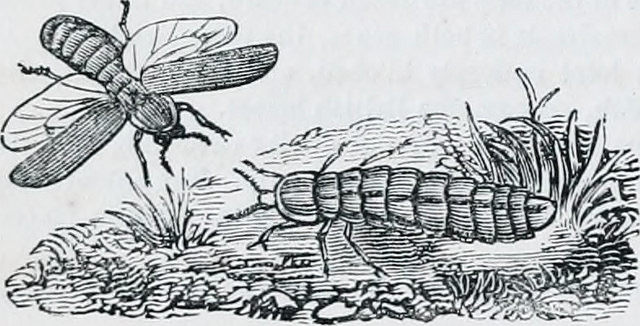
One major reason why individuals evolve to be choosy about who they mate with is that it can directly impact their fitness. By choosing a mate with particular characteristics, individuals can gain more parental care for their offspring, avoid parasites, or be choosing a mate with higher fertility. For example, female glow-worms flash at night to attract males flying by. Females with larger, brighter lanterns have higher fecundity, so males with a preference for brighter flashes will gain a direct benefit to their own fitness. (Note that males will benefit even if these differences in female fecundity are entirely driven by differences in environment, and thus non-heritable.) Indeed male glow worms have evolved to be attracted to brighter flashing lures.
However, even in the absence of direct benefits of choice, selection can still indirectly favour the evolution of choosiness. These indirect benefits occur because individuals can have higher fitness offspring by choosing a mate whose phenotype indicates high viability (the so-called ‘good genes’ hypothesis), or by choosing a mate whose phenotype is simply attractive, and likely to produce similarly attractive offspring (the ‘runaway’ or ‘sexy sons’ hypothesis).
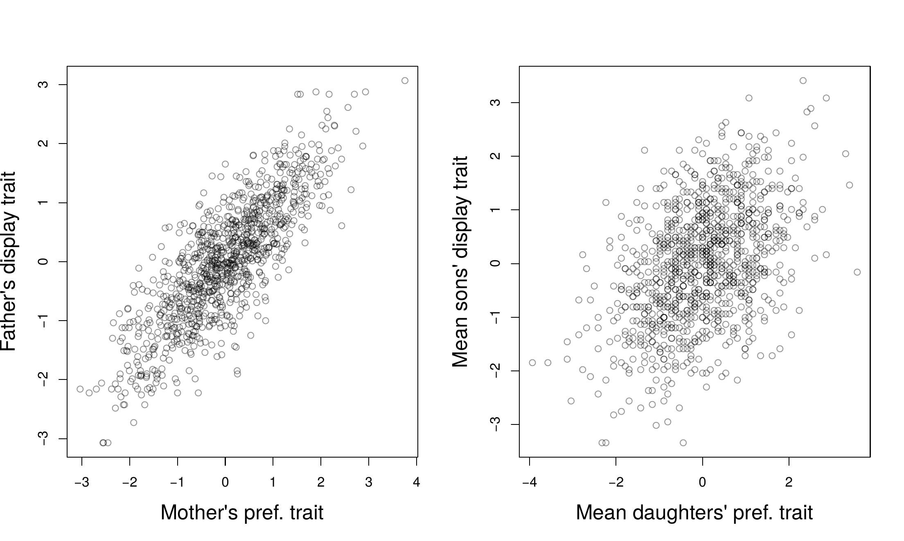
We’ll denote a display trait, e.g. tail length, in males by \(\text{♂}\) and a preference trait in females by \(\text{♀}\). Our display trait is under direct selection in males, such that its response to selection can be written as
Let’s assume that the female preference trait, the degree to which females are attracted to long tails, is not under direct selection \(\beta_{\text{♀}}=0\). Then the response to selection of the preference trait can be written as
So the female preference will respond to selection if it is genetically correlated with the male trait, i.e. if \(V_{A, \text{♀} \text{♂}}\) is not zero. There’s a number of different ways this genetic correlation could arise; the simplest is that the loci underlying the male trait may have a pleiotropic effect on female preference. However, female preference may often have quite a distinct genetic basis from male display traits.
A more general way in which trait-preference genetic correlations may arise is through assortative mating. As females vary in their tail-length preference, the ones with a preference for longer tails will mate with long-tailed males and the opposite for females with a preference for shorter-tails. Therefore, a genetic correlation between display and preference traits will become established (see Figure 9.14).
The males with the longer tails will also carry the alleles associated with the preference for longer tails, as their long-tailed dads tended to mate with females with a genetic preference for long tails. Similarly, the males with shorter tails will carry alleles associated with the preference for shorter tails. Thus if there is direct selection for males with longer tails, then the female preference for longer tails will increase too, as it is genetically correlated via assortative mating.
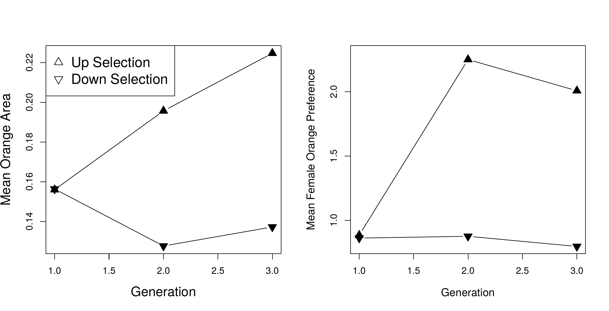
As an example of how direct selection on display traits can drive the evolution of preference traits, let’s consider some data from guppies. Guppies (Poecilia reticulata) are a classic system for studying the interplay of natural and sexual selection. In some populations of guppies, females show a preference for males with more orange colouration.
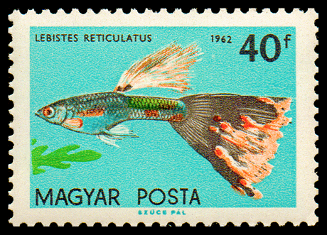

Houde (1994) established four replicate population pairs of guppies and selected one of each pair for an increased or decreased orange coloration in males, selecting the top/bottom \(20\) out of \(50\) males. She randomly chose females from each population to form the next generation, and so did not exert direct selection on females. She measured the response to selection on male colouration and on female preference for orange (left and right panels of Figure 9.15 respectively). In the lines that were selected for more orange males, females showed an increased preference for orange. While in those lines selected for less orange in male displays, females showed a decreased preference for orange. This is consistent with indirect selection on female orange preference as a response to selection on male colouration, due to a genetic correlation between female preference and male trait. It is a priori unlikely that pleiotropy is the source of the genetic correlation between these traits, rather it is likely caused by females assortatively mating with males that match their colour preference.
Returning to our bird tail example, what could drive the direct selection on male tail length? The selection for longer tails in males could come about because longer tails are genetic correlated with higher male viability, for example perhaps only males who gather an excess of food have the resources to invest in growing long tail, i.e. a long tail is an honest signal of fitness. This would correspond to a ‘good genes’ explanation of female mate choice evolution.
There’s another subtler way that selection could favour our male trait. Imagine that the variation in female preference trait is because some females have no strong preference for male tail length, but some females have a strong preference for males with longer tails.
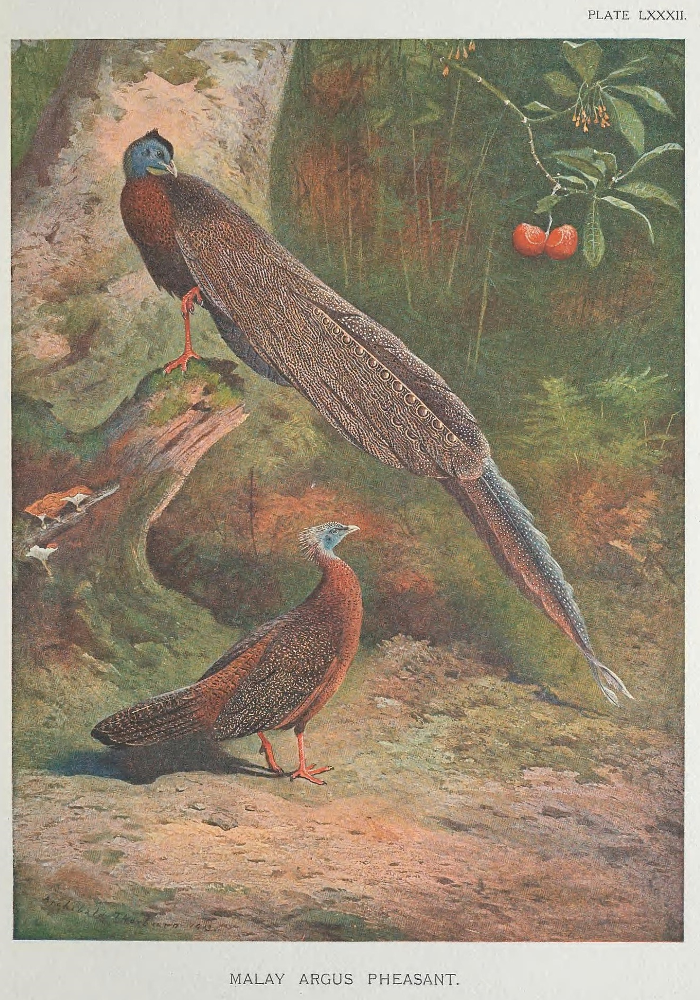
Males with longer tails would then have higher fecundity than the short-tailed males as there’s a subset of females who are strongly attracted to long tails, and these males also get to mate with the other females. Thus selection favours long-tailed males, and so indirectly favours female preference for longer tails; females with a preference for longer-tails have sons who in turn are more attractive. This model is sometimes called the sexy-son model. It is also called the Fisherian runaway model (Fisher 1915), as female preference and male trait can coevolve in an escalating fashion driving more and more extreme preferences for arbitrary traits. Thus many extravagant display traits in males and females may exist purely because individuals find them beautiful and are attracted to them.
Hamilton’s Rule and the evolution of altruistic and selfish behaviours
“ ‘The only reason for making a buzzing-noise that I know of is because you’re a bee.’ Then [Pooh] thought another long time, and said: ‘The only reason for being a bee that I know of is to make honey…And the only reason for making honey is so as I can eat it.’ ” –Winnie-the-Pooh, Milne and Shepard (1926).
One of the seismic shifts caused by Darwin’s work was the realisation that organisms don’t exist for the benefit of other individuals or other species. Bees didn’t evolve to pollinate flowers, any more than they evolved to make honey for bears. If we can say that there is a ‘reason’ why an organism exist it is only to leave offspring to the next generation. Pooh can be forgiven for straying from Darwinian thought, as he exists for the benefit of Christopher Robin and other childrens’ bedtime stories.
However, there’s a wrinkle to this Darwinian view. Worker bees don’t make honey to benefit their offspring, they are sterile and are working for the benefit of the Queen bee and her offspring. Individuals frequently behave in ways that sacrifice their own fitness for the benefit of others. That selection favours such apparent acts of altruism is puzzling at first sight. Hamilton (1964a,b) supplied the first general evolutionary explanation of such altruism. His intuition was that while an individual is losing out of some reproductive output, the alleles underlying an altruistic behaviour can still spread in the population if this cost is outweighed by benefits gained through the transmission of these alleles through a related individual. Note that this means that the allele is not acting in an self-sacrificing manner, even though individuals may as a result.
Altruism reflects social interactions. So as a simple model let’s imagine that individuals interact in pairs, with our focal individual \(i\) being paired with an individual \(j\). Imagine that individuals have two possible phenotypes \(X=1\) or \(0\), corresponding to providing or withholding some small act of ‘altruism’ (we could just as easily flip these labels and call them an unselfish act and a selfish act respectively). Our pairs of individuals interacting could, for example, be siblings sharing a nest. The altruistic trait could be as simple as growing at a slightly slower rate so as to reducing sibling-competition for food from parents, or more complicated acts of altruism such as children foregoing their own reproduction so as to help their parents raise their siblings.
Providing the altruistic act has a cost \(C\) to the fitness of our individual and failing to provide this act has no cost. Receiving this altruistic act confers a fitness benefit \(B\) over individuals who did not receive this act. Hamilton (1964a)’s rule states that such a trait will spread through the population if
where \(F\) is the average kinship coefficient between the interacting individuals (\(i\) and \(j\)). In the usual formulation of Hamilton’s Rule our \(2F\) is replaced by the ‘Coefficient of relationship’, which is the proportion of alleles shared between the individuals. Here we use two times the kinship coefficient to keep things inline with our notation for these chapters. Note that if our individuals are themselves inbred we need to do a little more careful to reconcile these two measures. So the altruistic behaviour will spread even if it is costly to the individual if its cost is paid off by the benefit to sufficiently related individuals.
As one example of kin-selection consider Krakauer (2005)’s work on co-operative courtship in wild turkeys (Meleagris gallopavo). Male turkeys often form display partnerships, with a subordinate male helping a dominant male with displaying to females and defending the females from other groups of males.
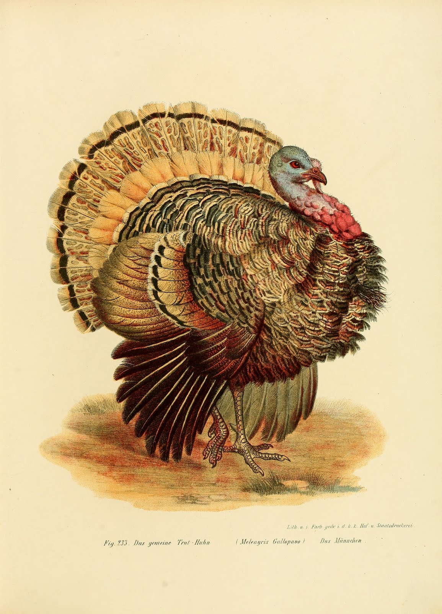
These pairs are often full brothers (\(F=0.25\)), with the subordinate male often being the younger of the two. The subordinate male often loses out on mating opportunities over their entire lifetime by acting as a wingman for their older brothers. Krakauer (2005) estimated that dominant males gained an extra \(6.1\) offspring when they display with a partner than males who display alone. Rhe subordinate males lose out on fathering \(0.9\) offspring compared to solitary males. Thus the costs of helping by subordinate males is more than compensated by the fitness gains of their brothers (\((2 \times 0.25) \times 6.1 > 0.9\)), and so the evolution of this altruistic helping in co-operative courtship is potentially well explained by kin-selection (see Akçay and Van Cleve 2016 for more analysis).
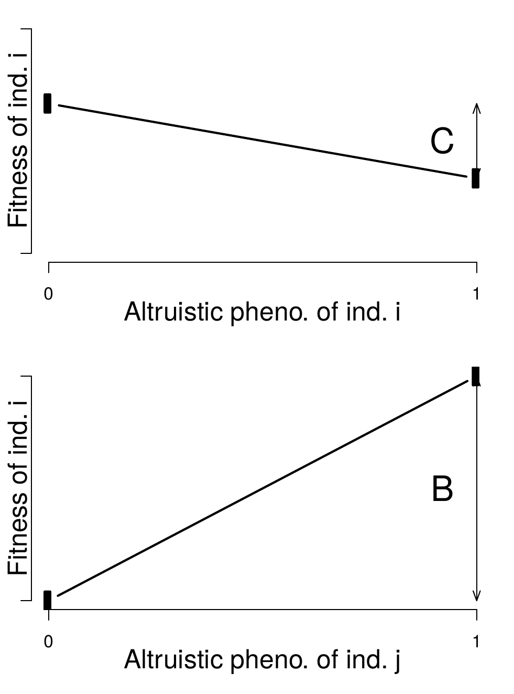
Where does this result come from? Well, we can use our quantitative genetics framework to gain some intuition by deriving a simple version of Hamilton’s Rule by thinking about the phenotypes of an individual’s kin as genetically correlated phenotypes. To sketch a proof of this result, let’s assume that our focal \(i\) individual’s fitness can be written as
where \(W_i\) is the contribution of the fitness of the individual \(i\) due to their own phenotype, and \(W_j\) is the contribution to our individual \(i\)’s fitness due to the interacting individual \(j\)’s behaviour (i.e. \(j\)’s phenotype). With the benefit \(B\) and cost \(C\), our \(W(i,j)\) are depicted in Figure 9.19.
Following our multivariate breeder’s equation, we can write the expected change of our behavioural phenotype as
Our altruistic phenotype is increasing in the population if \(R>0\), i.e. if
The slope \(\beta_i\) of the regression of our focal individual’s behavioural phenotype on fitness is proportional to \(-C\). The slope \(\beta_j\) of the regression of our interacting partner’s phenotype on our focal individual’s fitness is proportional to \(B\) (with the same constant of proportionality). Therefore, our altruistic phenotype is increasing in the population if
\[\begin{aligned} \beta_i V_A + \beta_j V_{A,i,j} & > 0 \\ B \frac{V_{A,i,j}}{V_A} & > C \end{aligned} \tag{9.17}\]
So what’s the average genetic covariance between individual \(i\) and \(j\)’s altruistic phenotype? It’s the same behavioural phenotype in both individuals, so the phenotypes are genetically correlated if our individuals are related to each other. The covariance of the same phenotype between two individuals is just \(2 F_{i,j} V_A\) (see (7.16)). So our altruistic phenotype is increasing in the population if
\[\begin{aligned} B\frac{2 F_{i,j} V_A}{V_A} &> C \\ 2 F_{i,j} B & > C \end{aligned} \tag{9.18}\]
Seen from this perspective, Hamilton (1964a)’s rule is simply a statement that altruistic behaviours can spread via kin-selection, if the average cost to an individual of displaying an altruistic phenotype, i.e. carrying altruistic alleles, is paid back through the average benefit of interacting with altruistic relatives (kin).
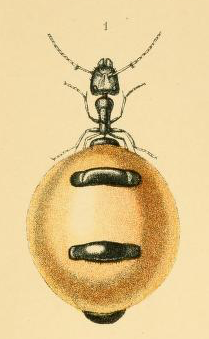
Under the kin-selection, relatedness and the breeding structure of the populations are hypothesized to be a key factor in determining the evolution of altruistic behaviours. One most impressive example of the evolution of altruism is the repeated evolution of eusociality, where sterile castes have evolved to help to rear their siblings rather than their own offspring. Eusociality has evolved at least eight independent times in Hymenoptera (bees, wasps, and ants). There’s huge variation in mating systems in Hymenoptera from high levels of multiple mating to monandry. Hughes et al. (2008) conducted a comparative phylogenetic analysis of mating system across hundreds of Hymenoptera species. They found that each of the eight of eusocial clades had monandry, females mating with a single male, as an ancestral state. Thus, eusociality initially evolved in populations where relatedness was maximized among siblings.
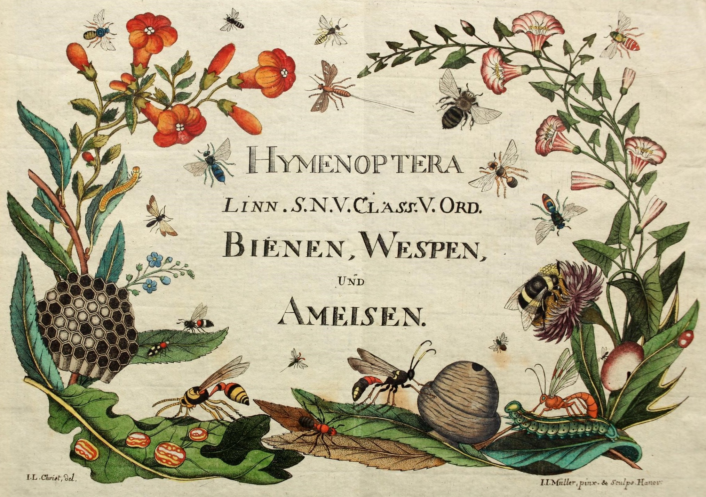
Other forms of altruism. Kin-selection can favour altruism because individuals carrying altruistic alleles interact with other related individuals who tend to display altruistic phenotypes and so gain an advantage. However, there are other ways that altruistic behaviours can spread than just through the interactions with kin.
There’s an inherent problem with co-operation among non-relatives. Cheaters often win. To see the quandary of co-operation lets consider the classic prisoner’s dilemma. Imagine that two criminals are caught by the police, there’s not enough evidence to get them on the main charge but they will be convicted of a lesser charge. The prisoners don’t know each other well, they’ve never worked together before. They face a year in prison each on the lesser charge. The police offer each prisoner a deal, testify against your codefendant and we’ll drop all charges against you, your codefendant will get three years. If they both choose to sell out they’ll each get two years. The best-combined outcome for the defendants is to co-operate with each other and keep silent, they’ll each serve a year. However, the defendants can not confer, and each has no way to know if the other has squealed and ratted him out. The rational choice in this one-off interaction is to sell out your fellow prisoner. There are many situations like this where an interaction between individuals has the best outcome if they work together. However, as individuals could cheat on the interaction, the rational outcome may be to not co-operate. To place this in an evolutionary setting, we could imagine that the fitness of organisms in a population depended on their strategies in a one-off prisoner’s dilemma game, e.g. pairing individuals at random. In such settings, a cheating individual would have higher fitness than an altruist, and so the population would evolve to all cheat. Yet cooperation between non-relatives has evolved many times.
| Silent (Co-operates) | Confesses (Cheats) | |
|---|---|---|
| Silent (Co-operates) | 1, 1 | 3, 0 |
| Confesses (Cheats) | 0, 3 | 2, 2 |
The key factor leading to non-cooperative behaviour in this prisoner’s dilemma was the one-off nature of the interaction. The optimum strategy changes when our partners face this situation together multiple times, e.g. if our gang members being hauled in regularly over the years in their lives in crime. Intuitively, if one of our prisoners knows that her fellow gang member didn’t betray her last time then you might expect that she would be more inclined to trust them and not betray them this time. This setup is called the iterative prisoner dilemma, with our prisoners facing the ‘game’ with the costs and benefits repeatedly with knowledge of how the other player behaved on previous rounds of the game. in this iterated setting, a simple ‘tit-for-tat’ strategy is possible (Axelrod and Hamilton 1981). Players following this strategy starts the game by cooperating, and then copy the other prisoner’s strategy from the last move (if the other prisoner cooperated last time they cooperate this time, and similarly for cheating). Imagine again our population of organisms that are now randomly paired to play iterated games for their fitness. If many individuals in the population play a tit-for-tat strategy, a cheating individual in this population has lower fitness than a tit-for-tat individual. Individuals playing a tit-for-tat strategy do not cooperate with cheaters, and so pay little relative cost for interacting with these individuals, but they gain the benefits of cooperation with other altruistic individuals. Thus ‘reciprocal altruism’, where individuals provide costly aid to individuals they expect will reciprocate at some future date, can evolve (Trivers 1971). Note that there’s nothing truly altruistic about reciprocal altruism, the interacting individuals are simply acting to increase their direct fitness across their lifetimes and as such the interaction is mutually beneficial. Thus some prefer the name ‘reciprocity’ rather than ‘reciprocal altruism’.
We can use our Hamilton’s rule framework to understand the evolution of reciprocal altruism in more detail (Queller 2011). The only requirements for Hamilton’s rule to predict the spread of an altruistic behaviour is that
this is the same as Equation 9.17 where now we’ve written out \(V_{A,i,j}\) as a covariance between the behavioural phenotype of our focal individual \(i\) and the interacting individuals \(j\).
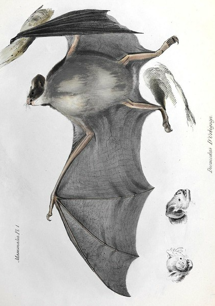
So we need a sufficiently positive level of covariance between the altruistic behaviour of individual \(i\) and that of the interacting individuals to outweigh the costs, i.e. altruists interact sufficiently often with altruists to allow altruistic individuals who are paying costs to on average receive the fitness benefits from other individuals. Under kin-selection models, this positive covariance comes from the positive genetic covariance interacting with family members. However, this positive covariance can also arise if altruists display context-dependent strategies, such as tit-for-tat, where they are only altruistic towards individuals who haven’t cheated them recently in the past (Queller 2011). Note that we’re really stretching our use of the multivariate breeder’s equation here, these covariances now aren’t really genetic covariances. These covariances aren’t between traits in the same individual, or between related individuals, they are trait covariances by individuals interacting with similarly co-operative individuals. These interacting individuals don’t even have to be same species here, as these models can be used to understand the evolution of inter-species mutualisms.
We find altruism in some seemingly strange places. Vampire bats (Desmodontinae), as their name suggests, feed only on the blood of other animals. However, blood is not quite the superfood that Dracula would have you believe. Blood is mostly water. Flying is incredibly energetic, and so the bats have to consume half their body weight in blood a night and will quickly die if they go without a meal. It is often hard to find enough blood in a night, and so who miss out on feeding only survive by other bats sharing their blood meals. Vampire bats do share their meals with their kin, but also with unrelated individuals. As predicted by reciprocal altruism they tend to share with individuals who have previously shared foods with them, thus the food sharing can be seen as an adaptive behaviour (Wilkinson 1984; Carter and Wilkinson 2013).
Chapter summary.
Natural selection rarely acts on one trait in isolation, rather selection often acts on many traits at once. Thus the short-term response of selection on a trait also reflects selection on other partially genetically correlated traits. Many evolutionary tradeoffs, among different aspects of fitness, can be thought of in these terms.
The between generation response of multiple traits to selection can be understood and predicted by the multi-variate (multiple traits) breeder’s equation. The response of a trait (\(R_1\)) depends on the additive genetic variance for that trait and direct selection gradient on the trait (\(V_{A,1} \beta_1\)), this direct response is modified by indirect selection on the trait(s) (\(2\)) that genetically covary (\(V_{A,12} \beta_2\)).
We can estimate the linear, directional selection gradients (\(\beta\)s) by the multivariate linear regression of fitness on phenotypes. We can incorporate stabilizing-, disprutive-, and covarying-selection among traits by including quadratic terms for the phenotypes into this regression.
We can interpret the multivariate breeder’s equation in terms of a fitness landscape approach, and see that natural selection can drive our population towards local peaks of mean fitness. However, the path it takes is biased to line up better with the genetic correlations among traits, which can in some cases slow the response of our population to selection.
The multivariate breeder’s equation is applied in many places in evolutionary theory. For example, the evolution of indirect selection for mate preference is an application, as the genetic correlation established by assortative mating between preference traits and display traits is key to understanding why mate preference can respond to indirect selection. We also saw how kin selection models can be developed to understand altruism and Hamilton’s rule using the multivariate breeder’s equation by seeing relatives as having genetically covarying fitnesses.
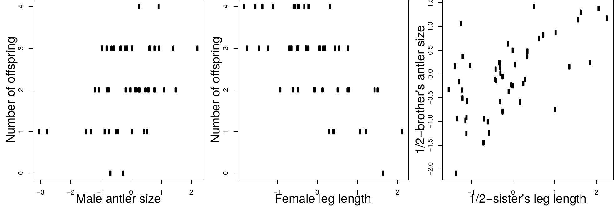